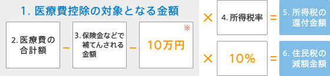

インプラントならアイデンタルクリニック トップページ > 医療費控除について > 医療費控除金額の計算
1年間に支払った医療費の合計が10万円以上（所得が200万円未満の場合は、医療費の合計が1年間の所得の5%を超えていること）の場合、確定申告で医療費控除の申請手続きをすれば、所得税の還付と、翌年度の住民税減額を受けることができます。
医療費控除金額は以下のように計算します。

※10万円、または1年間の所得が200万円未満の場合は所得の5％になります。
1. 医療費控除の対象となる金額
計算結果がマイナスの場合には医療費控除の対象にはなりません。
また、医療費控除の対象となる金額は最高200万円までになります。
2. 医療費の合計額
医療費控除は医療機関での治療にかかった費用に対する控除です。
審美歯科治療など控除対象外のものもございますので事前にご確認ください。
3. 保険金などで補てんされる金額
保険金で補てんされる金額は、その給付の目的となった医療費の金額を限度として差し引きます。
例）生命保険契約などで支給される入院費給付金、健康保険などで支給される療養費、家族療養費、出産育児一時金などになります。
4. 所得税率
所得税率は、あなたの所得金額により異なります。
| 1年間の課税される所得金額 | 所得税率 |
|---|---|
| 195万円以下 | 5％ |
| 195万円～330万円以下 | 10％ |
| 330万円～695万円以下 | 20％ |
| 695万円～900万円以下 | 23％ |
| 900万円～1,800万円以下 | 33％ |
| 1,800万円～ | 40％ |
※2009年4月1日現在
5. 所得税の還付金額
所得税の確定申告を行うことで医療費控除の還付を受けることができます。
6. 住民税の減額金額
所得税の確定申告を行うことで住民税の減額も受けることができます。確定申告を行えば、新たに住民税の申告書を提出する必要はありません。
- 医療費控除の対象となる条件
- 医療費控除金額の計算
- 医療費控除金額のカンタン計算ツール
- 医療費控除申告に必要な書類の準備
- 医療費控除の申告方法